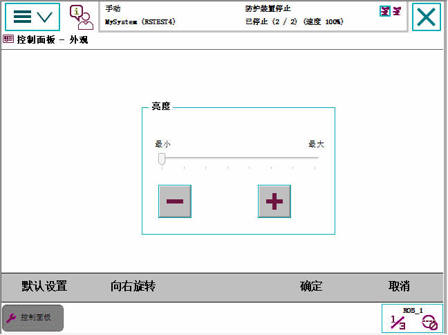

操作该设备时，通常使用左手持设备。 但是，左利手者通常更喜欢使用左手在触摸屏上操作，不过他们可以轻松通过将显示器旋转 180 度，使用右手持设备。 FlexPendant 出厂时设为右手操作，但是可轻松地调节为左手操作，满足左利手者的需要。
操作 FlexPendant 时，右利手者手握设备顶部，而左利手者手握设备底部。 显示器旋转 180 度以后，须特别注意紧急按钮的位置。

使用此程序调节 FlexPendant 为适合左利手用户使用。
操作 | |
1 | 点击 ABB 菜单，然后点击 Control Panel（控制面板）。 |
2 | 点击 Appearance（外观）。 |
3 | 点击 Rotate right（向右旋转）。  |
4 | 旋转 FlexPendant，将其移至另一只手。 |
将 FlexPendant 调节为左手操作时会影响以下设置.
设置 | 效果 | Information |
微动控制方向 | 控制杆方向可自动调整. | 微动控制菜单中的微动控制方向图示会自动调节. |
硬件按钮和预设按键 | Start（启动）、Stop（停止）、Forward（步进）和 Backward（步退）按钮不会与预设按键交换位置。 | 在 硬按钮 图解中参阅按钮 A-G. |
紧急停止 | 无效。 | 位置不同，位于底部而不是顶部。 |
三位使动装置 | 无效果 |